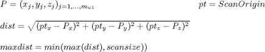
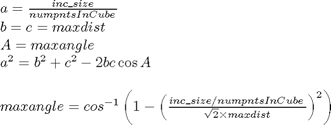
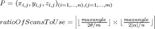
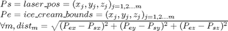
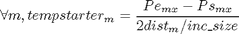
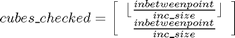

organise_data
Description: This function gets the data back either from loading or the robot and fills in the known free and known full the same as the do scan function does. Most things need to exist for this function, including the global variables describing the current workspace, the scan taken, the robot and all the PointData, RangeData from the scan
Contents
- Function Call
- Variables
- Check data validity
- Determine max distance used in ray casting
- Maxangle so that we have numpntsInCube at maxdist
- Determine ration of points to use
- Make sure we have a ration logically at minimum 1:1
- Setup ray tracing variables
- Get distance from 1 laser_pos to end points
- Setup ray tracing discrete check points
- Go through each valid row (where dist>0) and ray trace
- Determine the cubes which the ray passed through within work (generous)
- final step of saving the unique cubes rays passed through and end points
- Timing and Display purposes
- Update (indexed) obstacles points global variables
- Fill in the newest knowledge about points
- Do the 3D median filtering on the unknown space
- Do surface making on obstacle points from this scan
- Add to made surface variables
Function Call
- Inputs: tilt_scan_range (double) radians - the new scan.alpha used to determine ration of points to use
- Returns: Null
function organise_data(tilt_scan_range)
Variables
global workspace scan r Q PointData RangeData starttime=clock; % Number of points we want in the cube for ray casting numpntsInCube=scan.numpntsInCube;
Check data validity
Process Data from PointData scan matrix to a 3*many form
ice_cream_bounds=zeros([size(PointData,1)*size(PointData,2),3]); for i=1:size(PointData,1); ice_cream_bounds((i-1)*size(PointData,2)+1 : i*size(PointData,2) , :)=... [[PointData(i,:,1)]',[PointData(i,:,2)]',[PointData(i,:,3)]']; end % Eliminate points where the range data is == 0 if ~isempty(RangeData) rangedata_singlemat=zeros([size(RangeData,1)*size(RangeData,2),1]); for i=1:size(RangeData,1); rangedata_singlemat((i-1)*size(RangeData,2)+1 : i*size(RangeData,2))=RangeData(i,:)'; end ice_cream_bounds=ice_cream_bounds((rangedata_singlemat>0),:); if size(ice_cream_bounds,1)==0 error('There is no data with range greater than 0'); end % Save this scan data as a block workspace.ALLlastscandataInWkspace=ice_cream_bounds; else error('There is some problem with the laser, no data has been returned'); end
Determine max distance used in ray casting

% Cube of interest is minout of maxrange and specified scan size
maxdist = min( max(rangedata_singlemat) , scan.size);
Maxangle so that we have numpntsInCube at maxdist

maxangle=acos(... 1-(... (workspace.inc_size/numpntsInCube)/(sqrt(2)*maxdist)...%used to be scan.size %%Now it will be AT LEAST scan size but maybe bigger )^2 ... );
Determine ration of points to use

ratioOfScansToUse=abs(... floor(... maxangle/... ((scan.theta*2) / ... (size(PointData,2))... )... )... *... floor(... maxangle/... ((abs(tilt_scan_range)*2) / ... (size(PointData,1))... )... )... );
Make sure we have a ration logically at minimum 1:1
if ratioOfScansToUse<1; ratioOfScansToUse=1; % ice_cream_bounds stays the same else % Go through the index at a ratio as decided and only use these points indexofScanstoUse=1:ratioOfScansToUse:size(ice_cream_bounds,1); ice_cream_bounds=ice_cream_bounds(indexofScanstoUse,:); end
Setup ray tracing variables
Where the laser is at start of scan (used thoughout as origin)
laser_pos=scan.origin; % Min and max cubes space_min_and_max=[workspace.min/workspace.inc_size,workspace.max/workspace.inc_size]; % The cubes that rays pass through markedcubes=[];
Get distance from 1 laser_pos to end points

dist=sqrt((laser_pos(1)-ice_cream_bounds(:,1)).^2+... (laser_pos(2)-ice_cream_bounds(:,2)).^2+... (laser_pos(3)-ice_cream_bounds(:,3)).^2); % the valid distances (greater than 0) valid_rows=find(dist);
Setup ray tracing discrete check points

tempstarter=(ice_cream_bounds(:,1)-laser_pos(1))./(2*dist(:)/workspace.inc_size);
Go through each valid row (where dist>0) and ray trace
for i=[valid_rows]' %---collum 1 %check each one of the segements for zero distance and fill with that planes value for inbetweens if abs(laser_pos(1)-ice_cream_bounds(i,1))<tempstarter(i) tempCOL=[laser_pos(1)*ones([round((2*dist(i)/workspace.inc_size))+1,1])]; else tempCOL=[(laser_pos(1):tempstarter(i):ice_cream_bounds(i,1))']; end inbetweenpoint=[tempCOL,ones([length(tempCOL),2])]; %---collum 2 if laser_pos(2)==ice_cream_bounds(i,2) || size(inbetweenpoint,1)<=1 inbetweenpoint(:,2)=inbetweenpoint(:,2)*laser_pos(2); else %since sometimes due to a rounding error dividing it will not be the same, so minus 0.5 off the size and we should get the correct %num of rows so concaternation can happen properly try tempCOL(1:end)=(laser_pos(2):(ice_cream_bounds(i,2)-laser_pos(2))/(size(inbetweenpoint,1)-1):ice_cream_bounds(i,2))'; catch; tempCOL(1:end)=(laser_pos(2):(ice_cream_bounds(i,2)-laser_pos(2))/(size(inbetweenpoint,1)-0.5):ice_cream_bounds(i,2))'; end inbetweenpoint(:,2)=tempCOL; end %---collum 3 if laser_pos(3)==ice_cream_bounds(i,3) || size(inbetweenpoint,1)<=1 inbetweenpoint(:,3)=inbetweenpoint(:,3)*laser_pos(3); else try tempCOL(1:end)=(laser_pos(3):(ice_cream_bounds(i,3)-laser_pos(3))/(size(inbetweenpoint,1)-1):ice_cream_bounds(i,3))'; catch; tempCOL(1:end)=(laser_pos(3):(ice_cream_bounds(i,3)-laser_pos(3))/(size(inbetweenpoint,1)-0.5):ice_cream_bounds(i,3))'; end inbetweenpoint(:,3)=tempCOL; end
Determine the cubes which the ray passed through within work (generous)

cubes_checked=[int16(floor(inbetweenpoint/workspace.inc_size));int16(inbetweenpoint/workspace.inc_size)];
% Concaternate the cubes check which are in workspace with current list
markedcubes=[markedcubes;int16(cubes_checked((cubes_checked(:,1)>=space_min_and_max(1) &...
cubes_checked(:,2)>=space_min_and_max(2) &...
cubes_checked(:,3)>=space_min_and_max(3) &...
cubes_checked(:,1)<=space_min_and_max(4) &...
cubes_checked(:,2)<=space_min_and_max(5) &...
cubes_checked(:,3)<=space_min_and_max(6)),:))];
%this balances out with the above adding rows to a matrix, since unique
%is a slow function approx 49x slower than array resizing done above
if rand>0.98
markedcubes=unique(markedcubes,'rows');
end
end
final step of saving the unique cubes rays passed through and end points
if size(markedcubes)>0 markedcubes=unique(double(markedcubes),'rows'); %put back in realworld coords points=markedcubes.*workspace.inc_size; %make sure all are still inside workspace points=points((points(:,1)>=workspace.min(1) & points(:,2)>=workspace.min(2) & points(:,3)>=workspace.min(3) &... points(:,1)<=workspace.max(1) & points(:,2)<=workspace.max(2) & points(:,3)<=workspace.max(3)),:); %make sure end points are within the workspace bounds ice_cream_bounds=ice_cream_bounds((ice_cream_bounds(:,1)>=workspace.min(1) & ice_cream_bounds(:,1)<=workspace.max(1) &... ice_cream_bounds(:,2)>=workspace.min(2) & ice_cream_bounds(:,2)<=workspace.max(2) &... ice_cream_bounds(:,3)>=workspace.min(3) & ice_cream_bounds(:,3)<=workspace.max(3)),:); %remove self scanning points (points that are within the joints force fields) ice_cream_bounds_NOSELF=remove_self_scanning(ice_cream_bounds); indexedobsticles=unique(floor(ice_cream_bounds_NOSELF/workspace.inc_size)*workspace.inc_size,'rows'); %also get rid of any indexed points that are within the feilds indexedobsticles=remove_self_scanning(indexedobsticles); end
Timing and Display purposes
temptime=etime(clock,starttime); display (strcat('With ratioOfScansToUse=',num2str(ratioOfScansToUse),', You filled in:',num2str(size(points)),' cubes in: ',num2str(temptime),'secs'));
Update (indexed) obstacles points global variables
workspace.obsticlepoints=[workspace.obsticlepoints;ice_cream_bounds_NOSELF]; % only want unique indexed obsticles if size(workspace.indexedobsticles,2)==0 workspace.indexedobsticles=indexedobsticles; else workspace.indexedobsticles=union(indexedobsticles,workspace.indexedobsticles,'rows'); end
Fill in the newest knowledge about points
%the newestscan knowledge is what is now known compared to what was known about freespace and obstacles before workspace.newestknownledge=setdiff(points,[workspace.knowncoords;workspace.indexedobsticles],'rows'); workspace.knowncoords=unique([workspace.knowncoords;points],'rows'); %overall point is what is known that is not an obstacle workspace.knowncoords=setdiff(unique([workspace.knowncoords;points],'rows'),workspace.indexedobsticles,'rows');
Do the 3D median filtering on the unknown space
threeDMedianFilt();
Do surface making on obstacle points from this scan
try if size(ice_cream_bounds_NOSELF,1)>1 surface_making_simple(ice_cream_bounds_NOSELF,workspace.mew); end catch; keyboard; end global plane
Add to made surface variables
%this makes a workspace indexed version of the home points for i=1:size(plane,2) workspace.indexedobsticles_home_point=[workspace.indexedobsticles_home_point;... floor(plane(i).home_point/workspace.inc_size)*workspace.inc_size]; workspace.indexedobsticles_equ=[workspace.indexedobsticles_equ;plane(i).equ]; end